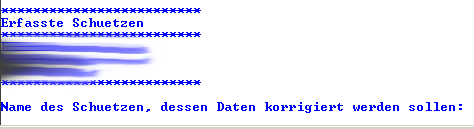
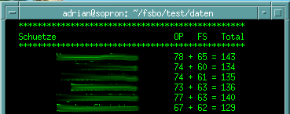
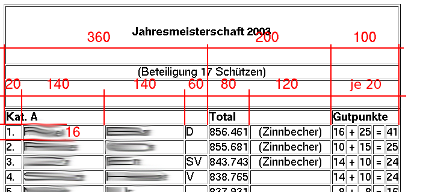

| Summary: | Dokumentation des Programmes zur Auswertung der Jahresmeisterschaft |
| Verfasser: |
Adrian Böhlen |
| Datum: | 2. April 2021 |
| Version: | 2.0.16 |
| Basis: |
Reglement Jahresmeisterschaft (2015) |
| Status: | final |
Das Programm dient dem Auswerten der Jahresmeisterschaft der Feldschützengesellschaft Bolligen am Ende jeder Schiesssaison. Es führt die komplexen Berechnungen soweit wie möglich automatisch durch und gibt die Resultate in einer grafisch ansprechenden Form aus.
Das Programm läuft unter allen gängigen Betriebssystemen und stellt keine besonderen Anforderungen an die Hardware.
Das Programm basiert auf dem entsprechenden Reglement von 2015. Es ist in AWK geschrieben und kommandozeilen-orientiert.
Sämtliche Daten werden in einer Tabelle im Textformat CSV
(comma separated values) gehalten. Die Vorgänge des
Auswertungsprozesses werden in einer Log-Datei
dokumentiert, welche im Arbeitsverzeichnis gespeichert wird. Sie hat
folgende Struktur:
<Jahr><Monat><Tag>.log,
also z.B. 2004Oct24.log.
UNIX / Linux
Die Programmiersprache AWK gehört zum Standardumfang dieser Systeme. Vorausgesetzt wird Version 4.0.0 oder höher. Zu installieren ist allenfalls ein HTML-Editor (z.B. Bluefish (http://bluefish.openoffice.nl/)
Mac OS X
Die Programmiersprache AWK gehört auch bei Mac OS X zum Standardumfang und braucht nicht installiert zu werden.
Zum manuellen Nachbearbeiten von HTML-Dateien ist ein HTML-Editor erforderlich (z.B. Bluefish (http://bluefish.openoffice.nl/).
Windows
Die Programmiersprache AWK gehört bei Windows leider nicht zum Standardumfang. Sie kann zwar manuell installiert werden (Download für Windows und weitere Systeme unter http://www.gnu.org/software/gawk/gawk.html). Es handelt sich lediglich um eine einzelne Datei namens gawk.exe (Dateigrösse ca. 400 – 700 kB), die in einem beliebigen Ordner gespeichert werden kann. Die Konfiguration der Umgebungsvariablen ist aber mühsam, daher ist es wesentlich einfacher, eine UNIX-Emulation zu installieren, wo dann AWK als Teil dieser Systeme auch zur Verfügung steht. Folgende Varianten wurden getestet und können empfohlen werden:
Diese Shells können dann genauso wie in einem «echten» UNIX-System konfiguriert werden. Falls der dann ebenfalls verfügbare Editor vim nicht ausreicht, empfiehlt es sich, zur komfortableren Bearbeitung der Textdateien noch folgende Editoren zu installieren:
Das Jahresmeisterschafts-Programm besteht aus der einzigen Datei «jahresmeisterschaft.awk». Diese enthält den kompletten Source-Code, welcher jeweils beim Aufruf kompiliert wird.
UNIX / Linux / MacOS X
«jahresmeisterschaft.awk» kann in einem beliebigen Verzeichnis abgelegt werden. Als erstes ist zu prüfen, dass der Pfad zum Interpreter in der ersten Zeile aktuell ist. Standardmässig lautet dieser Pfad:
#!/usr/bin/awk -f
Abweichungen sind aber möglich, insbesondere, wenn neue AWK-Versionen manuell kompiliert und installiert werden.
Damit das Programm von jedem beliebigen Ort aufgerufen werden kann, trägt man am besten einen entsprechenden Kurzbefehl (Alias) in die Konfigurationsdatei seiner Default-Shell ein. Bei der Bash heisst diese .bashrc und findet sich im persönlichen Verzeichnis /home/<Benutzer>.
Neue Kurzbefehle können einfach am Ende der Datei angefügt werden. Beispiel:
alias jm='/home/adrian/fsbo/software/jahresmeisterschaft.awk'
In diesem Fall läge die Programmdatei «jahresmeisterschaft.awk» im Verzeichnis /home/adrian/fsbo/software und könnte über den Kurzbefehl jm gestartet werden.
Windows
Am besten speichert man die Programmdatei «jahresmeisterschaft.awk» in jenem Ordner, in dem man die Auswertung vornehmen möchte.
Um das Programm zu starten, ist eine Konsole zu öffnen und ins Verzeichnis zu navigieren, wo man die Auswertung machen möchte:
UNIX / Linux
Konsole über den Menueintrag Terminal, xterm, New Window o.ä. (je nach System und Konfiguration verschieden) öffnen:
| cd <Arbeitsverzeichnis> |
| jm |
Mac OS X
Programme -> Dienstprogramme -> Terminal
| cd <Arbeitsverzeichnis> |
| jm |
Falls ein anderer Kurzbefehl als jm gewählt wurde, ist natürlich jeweils dieser zu verwenden.
Windows
Je nach installierter Umgebung entweder die git- oder die Cygwin-Konsole öffnen:
| cd <Arbeitsordner> |
| awk -f jahresmeisterschaft.awk |
Fehlermeldungen
Folgende Fehlermeldungen sind möglich:
| Symptom |
|
| Ursache | Der Pfad zum Interpreter in der ersten Zeile von «jahresmeisterschaft.awk» stimmt nicht. |
| Lösung | korrekten Pfad eintragen:#!/usr/bin/awk -fsollte meist funktionieren. Ansonsten Installationsverzeichnis ermitteln und dieses eintragen. Geht es immer noch nicht, das Programm über den expliziten Aufruf starten: awk -f jahresmeisterschaft.awk |
Klappt alles korrekt, zeigt einem der Prompt jahresmeisterschaft > an, dass man sich im Hauptprogramm befindet:
Über den Befehl
| usage |
erhält man eine Liste der verschiedenen Befehlen und ihren Funktionen.
Zum Erfassen dient der Befehl
| erf |
Danach beginnt die Erfassung mit dem Nach- und Vornamen des ersten zu erfassenden Schützen. In welcher Reihenfolge die einzelnen Teilnehmer erfasst werden, spielt keine Rolle. Bevor die einzenen Resultate erfasst werden können, werden noch einige zusätzliche Angaben gemäss folgendem Schema verlangt.
Die Erfassung der Resultate erfolgt in derselben Reihenfolge wie auf dem Formular im blauen Büchlein. Zudem muss für die spätere Berechnung der Gutpunkte jeweils angegeben werden, ob ein Kranzresultat geschossen wurde (ja / nein), natürlich nur bei den Anlässen, bei denen überhaupt Kränze geschossen werden können. Dies ist aus den jeweiligen Ranglisten ersichtlich:
Beim Einzelwettschiessen ist zudem das Feld anzugeben, in welchem der betreffende Schütze eingeteilt ist, da das Schiessprogramm für jedes Feld unterschiedlich ist.
Bei Schiessanlässen, die der betreffende Teilnehmer nicht besucht hat, gibt man als Resultat 0 ein. Nach dem Erfassen des letzten Resultates, werden die Daten in die automatisch erzeugte Tabelle «teilnehmer.csv» geschrieben und den Benutzer erwartet die Frage nach dem weiteren Vorgehen.
Zur Kontrolle kann mit folgendem Befehl eine formatierte Liste jedes erfassten Teilnehmers erzeugt werden:
| kontr |
Output:
Möchte man diese Liste ausdrucken, so kann sie mit
| plo kontr |
in die Datei «kontrolle.txt» geschrieben werden, von wo sie bequem über einen Editor ausgedruckt werden kann.
Das Korrekturprogramm wird vom Hauptprogramm mit folgendem Befehl gestartet:
| korr |
Es erscheint eine Liste der bisher erfassten Teilnehmer:
Hier ist der Name des Teilnehmers einzugeben, von dem ein Resultat korrigiert werden soll. Anschliessend muss das entsprechende Schiessen ausgewählt werden.
Nun kann das korrekte Resultat erfasst werden.
Zum Schluss wird man gefragt, ob noch weitere Resultate korrigiert werden sollen, falls nein, kommt man automatisch ins Hauptprogramm zurück.
Ist alles in Ordnung kann man über den Befehl
| calc rang |
von jedem Teilnehmer das Gesamtresultat ermitteln lassen. Je nach definierter Kategorie (A / B) werden dabei nebst den Pflichtresultaten die besten 6 bzw. 4 Resultate berücksichtigt. Dabei wird eine neue Tabelle namens «auswertung.csv» erstellt, welche zahlreiche zusätzliche Felder enthält, in denen nebst dem Gesamtresultat auch die Gutpunkte gespeichert werden und die Information, ob der Schütze die Teilnahmekriterien überhaupt erfüllt.
Damit die nachfolgende Verarbeitung fehlerfrei erfolgen kann, ist sicherzustellen, dass die Datei «auswertung.csv»mit 8 bit codiert ist (ANSI) und ansonsten eine Konvertierung vorzunehmen (z.B. mit Notepad++ oder VIM).
Die Rangliste wird über ein spezielles Modul automatisch im gewohnten Look & Feel erzeugt. Da sie im offenen Standard XHTML formatiert ist, kann sie mit einem beliebigen Web-Browser geöffnet und gedruckt werden. Die Schriftdefinition mittels CSS sorgt dafür, dass die Liste auf allen Browsern ungefähr gleich aussieht. Der Aufruf des Programmes geschieht über den Befehl
| plo rangh |
Als zusätzliche Informationen werden das Jahr der Meisterschaft, die Anzahl Schützen in der Kategorie A, sowie das Arbeitsverzeichnis und der Name der zu erstellenden Rangliste benötigt.
Im Anschluss wird geprüft, ob die Auswertung schon durchgeführt wurde. Falls nicht, wird dies angemeckert.
Nach vollbrachter Tat kann das Ergebnis mit einem Web-Browser bewundert werden.
Folgendes muss nun noch kontrolliert und ggf. manuell in einem HTML-Editor angepasst werden:
Alternativ besteht die Möglichkeit, die Rangliste im Zwischenformat PDC abzuleiten, welches danach in ein PDF überführt werden kann. Dies geschieht mit folgendem Befehl:
| plo rangp |
Für die Konvertierung wird das eigenständige Programm «pdc2pdf.awk» benötigt, welches am besten ebenfalls über einen Kurzbefehl zugänglich gemacht wird (analog Jahresmeisterschaftsprogramm). Der Aufruf erfolgt dann wie folgt:
| exit | |
| pdc2pdf rangliste_<Jahr>.pdc | |
Die Wertpunkte werden im File «wertpunkte_<jahr>.csv» gehalten, welches 2 Felder umfasst: schuetze und <jahr>. Bei der Auswertung muss jeweils das File des Vorjahres angegeben werden und infolge der Auswertung wird dann eine neue Tabelle für das aktuelle Jahr erstellt, welches im nächsten Jahr für die Auswertung beigezogen wird.
Teilnehmer, die im laufenden Jahr zum ersten Mal an der Jahresmeisterschaft teilnehmen, müssen vorgängig manuell an der richtigen Stelle eingefügt und mit 0 initialisiert werden.
Damit die Berechung durchgeführt werden kann, muss die Auswertung erfolgt sein, d.h. calc rang muss durchgelaufen sein. Die Aktualisierung der Wertpunktetabelle erfolgt anschliessend über dieses Kommando:
| calc wert |
Zum Erzeugen einer grafisch ansprechenden Tabelle im Format XHTML dient folgender Befehl:
| plo werth |
Hierzu muss das aktuelle Jahr und die zuvor bearbeitete Wertpunktetabelle des Vorjahres angegeben werden:
Auch hier kann alternativ eine PDC-Datei erzeugt werden:
| plo wertp |
Allfällige Korrekturen müssen dann in dieser Datei vorgenommen werden, wozu ein normaler Editor ausreicht. Achtung: Bei bezogenen Punkten sind zwingend auch die Totale anzupassen!
Die Konvertierung funktioniert nach dem gleichen Prinzip wie bei der Rangliste:
| exit | |
| pdc2pdf wertpunkte_<Jahr>.pdc | |
Die Wanderpreistabelle muss z.Z. manuell erstellt werden. Dazu kopiert man die Vorlagendatei «wanderpreise_vorlage.html» ins Arbeitsverzeichnis und ändert die entsprechenden Parameter mit einem HTML-Editor.
Folgende Informationen sind zu erfassen:
1. Jahresmeisterschaft Kat. A
gemäss Rangliste Jahresmeisterschaft
2. Jahresmeisterschaft Kat. B
gemäss Rangliste Jahresmeisterschaft
3. Feldschiessen und
Obligatorisches Programm
Die benötigte Information kann mit folgendem Befehl ermittelt
werden:
| calc opfs |
Es erscheint darauf eine Liste aller erfassten Schützen mit ihren Resultaten des OP und FS sowie dem Total der beiden Schiessen.
Derjenige mit dem höchsten Total wird anschliessend in die Wanderpreistabelle übertragen.
4. Ranghöchster Veteran
Obligatorisches Programm
ist anhand der Rangliste OP ersichtlich
5. Ranghöchster Veteran
Feldschiessen
ist anhand der Rangliste Feldschiessen ersichtlich
6. Präsidentenstabelle
immer der/die aktuelle Vereinspräsident(in)
Wie kann ich aus dem Programm auf das Betriebssystem zugreifen ?
Jeder Befehl, der nicht Teil des Befehlsumfangs des Jahresmeisterschaftsprogrammes ist, wird automatisch an das Betriebssystem weitergeleitet. Dies wird mit der Ausgabe ...submitting command to operating system... kenntlich gemacht. Beispiel:
| Symptom | Kommandos mit plo werden teilweise nicht erkannt |
| Ursache | unklar |
| Lösung | Implementierung der Kommandos evtl. gernerell anders lösen. Wird allerdings seit 2017 nicht mehr beobachtet. |
| Symptom | Schützen mit Umlauten im Namen werden beim Berechnen der Wertpunktetabelle nicht berücksichtigt |
| Ursache | Codierung der Umlaute sorgt leider immer wieder für Probleme |
| Lösung | evtl. eines zusätzliches Feld ohne Umlaute führen, um solche Vergleiche eindeutig durchführen zu können. |
| Symptom | Auf der Rangliste ist die Zahl der Teilnehmer zu hoch |
| Ursache | Zählervariable durchläuft vermutlich die Schleife einmal zu viel oder ist falsch initialisiert |
| Lösung | Korrekte Anzahl Teilnehmer ermitteln, auch unter Berücksichtigung ob erfüllt oder nicht. |
| ist | Teilnehmer, die im aktuellen Jahr zum ersten Mal an der Jahresmeisterschaft teilnehmen und bislang in der Wertpunktetabelle noch nicht erscheinen, werden dort nicht automatisch integriert. |
| soll | automatischer Abgleich mit der Wertpunktetabelle |
| Workaround | Teilnehmer manuell an der alphabetisch richtigen Stelle in der Wertpunktetabelle einfügen und den Punktestand mit «0» initialisieren. |
| ist | Teilnehmer, die im laufenden Jahr ihre Punkte (oder einen Teil davon) bezogen haben, werden bei der automatischen Berechnung nicht berücksichtigt. |
| soll | Möglichkeit, dies in sinnvoller Form über das Programm zu erledigen |
| Workaround | Punktestand des entsprechenden Teilnehmers manuell in der Wertpunktetabelle anpassen, ebenso in der grafischen Tabelle und dort die Summen entsprechend korrigieren. |
| ist | Im Kontrollfile "kontr.txt" ist nicht ersichtlich, ob ein Kranz geschossen wurde. |
| soll | Dieses File sollte auch zur Kontrolle der Kranzresultate verwendet werden können. |
| Workaround | Zusätzliche Spalte einfügen und z.B. mit einem X kennzeichnen, wo ein Kranzresultat erreicht wurde. |
Um Standblätter zu produzieren, steht ein eigenes Modul des Jahresmeisterschaftsprogrammes zur Verfügung. Dies benötigt nur einige grundsätzliche Parameter und erzeugt anschliessend 4 identische Standblätter auf ein A4-grosses Dokument im PDF-Format.
Der Vorgang wird mit dem Befehl
| plo st |
ausgelöst. Nachdem man das gewünschte Jahr eingegeben hat, erscheint eine Liste mit den vordefinierten Stichen der Jahresmeisterschaft und des Endschiessens, aus der man sich den gewünschten auswählt. Zudem besteht die Möglichkeit, benutzerdefinierte Stiche zu definieren. In diesem Fall müssen dann alle Parameter manuell eingegeben werden.
Achtung: Falls Umlaute benötigt werden, müssen diese über ihren Oktalwert eingegeben werden.
Diese Werte lauten:
Bsp: Jubil\344umsstich
Für weitere Sonderzeichen siehe http://www.fiveanddime.net/HTMLescapeCodes.html (Achtung: Codes im Dezimalsystem!)
Das Programm erzeugt anschliessend direkt ein Dokument mit dem passenden Dateinamen im PDF-Format, welches über einen PDF-Reader (z.B. Adobe Reader) geöffnet und gedruckt werden kann. Dies müsste etwa so aussehen:
Jetzt braucht’s nur noch verschieden farbiges Papier. Folgende Farben haben sich bewährt:
Diese Farbgebung ist aber nicht in Stein gemeisselt, jedoch sind häufige Wechsel zu vermeiden.
Beim Drucken muss beachtet werden, dass das Dokument in Originalgrösse ausgegeben wird (skalieren deaktivieren).
Die Jahresmeisterschaftskarte existiert als PDF und braucht normalerweise nicht geändert zu werden. Zum Drucken ist wie folgt vorzugehen:
Im Adobe Reader die erste Seite des Formulars öffnen und im Gegenuhrzeigersinn drehen.
Danach den Druckdialog starten. Folgende Einstellungen sind zu tätigen:
Anschliessend die bedruckte Seite wie folgt wieder in den
Papierschacht legen (gilt für den Brother HL-2040, kann bei
anderen Modellen ggf. abweichen):
Danach im Adobe Reader die zweite Seite öffnen. Diese darf nicht gedreht werden und muss mit denselben Optionen wie die erste Seite gedruckt werden.
Die Rückseite enthält eine Übersicht der Stiche, die
für die Jahresmeisterschaft zählen, sowie den bewilligten
Zuschlägen für Jungschützen. Anhand der Randlinie kann
das Formular anschliessen zugeschnitten werden.
Zusammen mit den Standblättern wird jedem Teilnehmer eine kleine Übersicht ausgehändigt, welche Stiche mit welchen Resultaten er geschossen hat, und welchen Prozentwerten dies entspricht. Ebenso ist das Total ersichtlich.
Diese Textdatei wird beim Durchführen der Funktion calc rang erzeugt und heisst «uebersicht.txt».
Dieses File wird anschliessend gedruckt, wobei darauf zu achten ist, dass die Tabelle nicht zu gross wird und auf einer Seite im Schiessbüchlein Platz hat (Abmessungen 21 × 8 cm). Bewährt hat sich folgendes Vorgehen:
Nach dem Drucken müssen die Tabellen noch passend zugeschnitten werden.
AWK
AWK ist eine vollwertige Programmiersprache mit sehr geringem Umfang (ca. 45 Seiten Spezifikation und ca. 400 kB Dateigrösse) und einem Minimum an Funktionen, deren Zweck die Bearbeitung strukturierter Textdateien ist. Die erste Version wurde 1977 von den Programmautoren Aho, Weinberger und Kernighan entwickelt, die den Namen der Sprache aus ihren Initialen bildeten. Seitdem wurde die Sprache in verschiedensten Versionen und unter unterschiedlichen Namen weiterentwickelt. Zumindest eine dieser Versionen ist heute auf nahezu allen UNIX/Linux-Systemen zu finden. Die Open Source-Version Gawk lässt sich darüber hinaus auch auf beliebigen weiteren Systemen installieren.
CSS
CSS steht für Cascading Style Sheets. Es ist eine Sprache, die der Obhut des W3C (World Wide Web Consortium; Vereinigung welche die Sprachen des Web definiert) obliegt und dazu dient, XML- und HTML-Dokumente einheitlich zu formatieren. Auf die Verwendung von CSS zu verzichten, führt z.B. dazu, dass HTML-Seiten, je nach Browsereinstellung ganz verschieden dargestellt werden können. Mittels CSS können dagegen Schriftfont, -grösse, -farbe und vieles mehr explizit definiert werden. Die aktuelle CSS-Version ist 2.1, CSS3 befindet sich seit 2000 in der Entwicklung, wird aber erst in Teilen durch das W3C empfohlen.
Open Source
Die Philosophie von Open Source ist die, dass Software sozusagen ein öffentliches Eigentum darstellt, an dem sich niemand bereichern soll. Solche Software ist somit frei zugänglich und steht jedermann zur Verfügung, ohne dass kommerzielle Zwänge dahinterstecken. Wer des Programmierens mächtig ist, hat darüber hinaus die Möglichkeit, derartige Software weiter zu entwickeln. Auf Open Source basieren z.B. das Betriebssystem Linux, der Browser Mozilla, die Programmiersprache Gawk und der Webserver Apache. Open Source-Programme sind häufig in C geschrieben. Sie sind oft genauso gut oder sogar besser als kommerzielle Software, für die man unter Umständen sehr viel Geld ausgeben muss. Da der Code von jedermann eingesehen werden kann, ist solche Software zudem sehr sicher, denn es ist so gut wie unmöglich, unbemerkt Viren einzubauen.
PDF
Das Portable Document Format
(PDF) ist ein plattformübergreifendes Dateiformat für druckbare Dokumente, das von der Firma Adobe Systems entwickelt und 1993 mit Adobe 1 veröffentlicht wurde. PDF ist ein universelles Dateiformat, das alle Schriften, Formatierungen, Farben und Grafiken jedes Ausgangsdokuments beibehält, unabhängig von der Anwendung und der Plattform, die zur Erstellung verwendet wurden. Zum Betrachten der Datei benötigt man einen PDF-Betrachter, z.B. Xpdf,
Ghostview oder den weit verbreiteten Adobe Acrobat Reader.
Seit dem 1. Juni 2008 ist PDF ein ISO-Standard.
XHTML
XHTML ist eine Weiterentwicklung der Auszeichnungssprache HTML (Hypertext Markup Language). Mittels HTML wird das Aussehen von Webseiten beschrieben. XHTML ist ein Schema für XML, daher ist jedes XHTML-Dokument gleichzeitig ein XML-Dokument. Es muss also ein wohlgeformtes Dokument sein, das zusätzlich auch noch den Regeln eines XHTML-Schemas folgt.
| calc opfs | Berechnet das Total aus OP und FS |
| calc rang | Berechnet die Daten für die Rangliste |
| calc wert | Aktualisiert die Wertpunktetabelle |
| erf | Startet das Erfassungsprogramm. Damit werden die Resultate aller Teilnehmer erfasst und in der Tabelle «teilnehmer.csv» abgelegt. Die Daten werden immer automatisch gespeichert. |
| exit | Beendet das Programm |
| kontr | Listet die Resultate aller Teilnehmer zwecks Kontrolle auf |
| korr | Startet das Korrekturprogramm. Damit können falsch eingegebene Daten berichtigt werden. Die Daten werden automatisch gespeichert. |
| plo kontr | Listet die Resultate aller Teilnehmer zwecks Kontrolle auf und schreibt sie in das Textfile «kontrolle.txt» |
| plo st | Erzeugt eine A4-Seite mit Standblättern im PDF-Format |
| plo rangh | Erzeugt die Rangliste im XHTML 1.0-Format. |
| plo rangp | Erzeugt die Rangliste im PDC Zwischenformat |
| plo werth | Erzeugt die Wertpunktetabelle im XHTML 1.0 - Format |
| plo wertp | Erzeugt die Wertpunktetabelle im PDC Zwischenformat |
| usage | Zeigt diese Befehlsübersicht |
Rangliste:
Wertpunkte:
Folgende Schriftgrössen werden verwendet (Font: Helvetica,sans-serif)
Rangliste:
Wertpunkte:
Um das korrekte Funktionieren der Applikation sicherzustellen, sind hier diverse Testfälle beschrieben, welche sinnvollerweise nach grösseren Modifikationen durchgeführt werden.